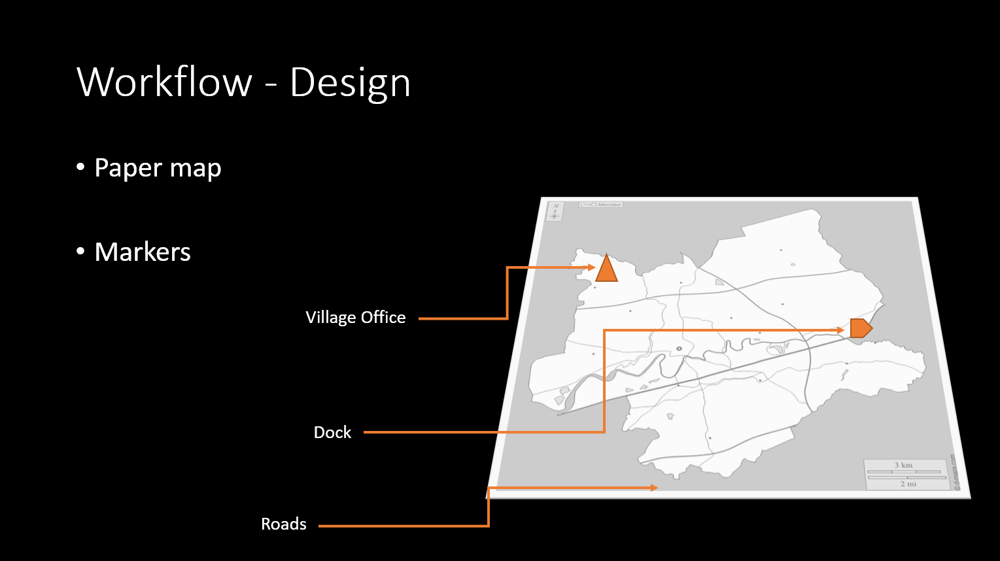
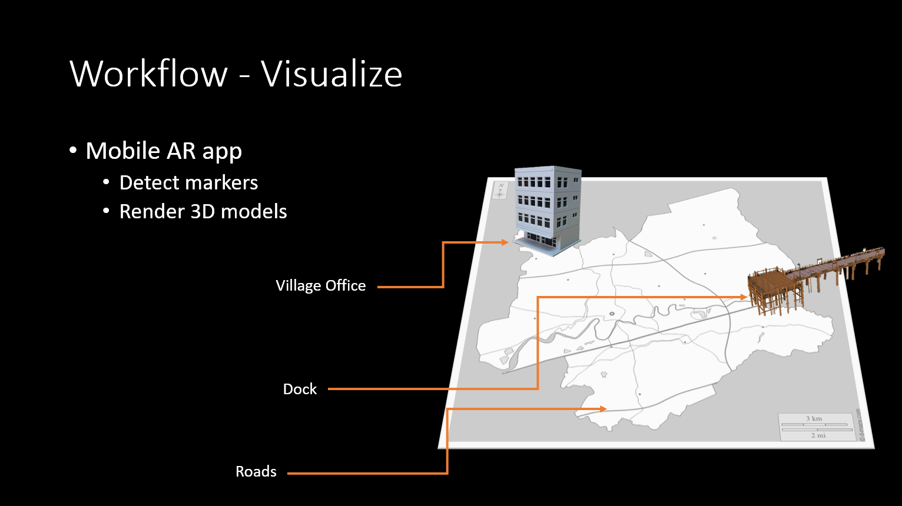
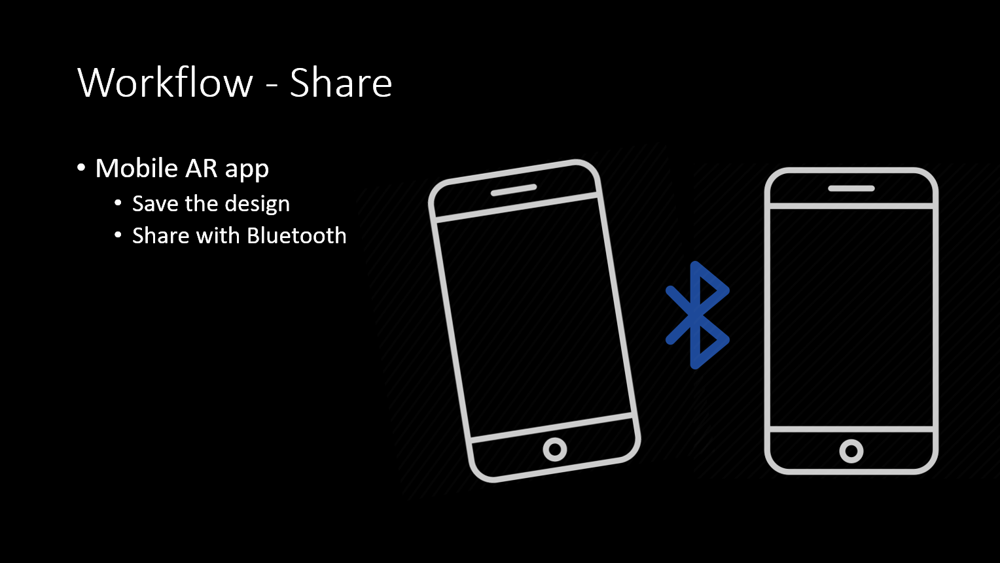
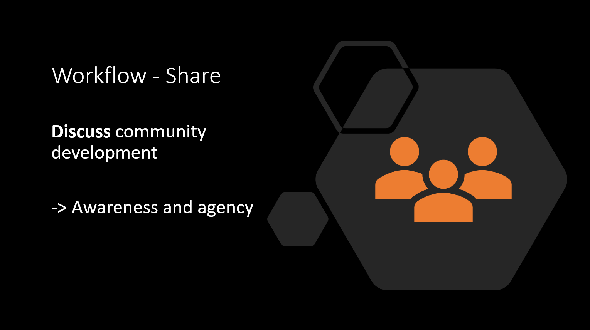

2021-2022. CS4552: Guided Study (Independent).
Fire-Safety Learning in Virtual Reality to Reduce
Inequality in Access to Information
Report
Skills:
- Interaction Design
- Usability Testing
- User Experience Evaluation (Interview, Questionnaire)
- Interdisciplinary Collaboration
TIn this project, we intended to design a Virtual Reality (VR) application for old residential communities in Hong Kong's urban areas with difficulty accessing fire-safety information. These communities sorely need fire-safety education but have diverse demographic distribution, making it difficult to inform and educate people via traditional means. Therefore, we wanted to explore the possibility of utilizing technologies to raise fire-safety awareness in an interactive and engaging way. I collaborated with scholars from fire engineering, public management, and computer science and Hong Kong community administrators to co-design this VR application. It allows users to rehearse fire escape in a virtual environment and learn fire-safety knowledge by completing tasks when escaping from the virtual building. I was responsible for designing, implementing, and testing the application. It is now under iteration and field tests, and we expect it to be published in major app stores shortly.
2022-2023. CS4512: Final Year Project (Independent). **In Progress
Designing an Augmented-Reality-Based Workflow for Community Awareness
and Agency in a Relocated Fishing Village.
Skills:
- Community Fieldwork
- Interaction Design
- Usability Testing
- User Experience Evaluation (Interview, Focus Group)
Hong Kong fishing communities are relocated from their traditional habitats to inland villages to accord with urban construction and marine protection. Relocated community members need to adapt to the new environment that is different from their original ones because the new community plan is designed by urban designers instead of the community members. The relocated fishing villagers wish to develop the community with their own needs considered. However, due to their low socio-economic status, they face difficulties claiming rights and expressing their voices, lowering their community awareness and agency. Following the HCI4D frameworks, this work presents the design of an Augmented-Reality (AR) based community development planning workflow that encourages community affairs discussion. The workflow comprises designing with papers and an AR application and showcasing the design to others, through which community members discuss development issues and rethink their responsibility and agency. The workflow first undergoes usability tests, then a collaborative design workshop followed by a focus group is conducted to assess user experience.
   